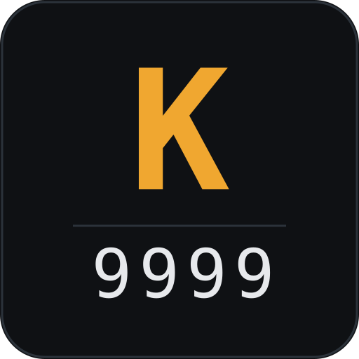

记录，不是栈帧
每次交互是一条持久记录，所以进程死掉它还在，重启能继续。原生挂起 { kind: "suspended" }，不是一个挂住的 promise。
MIT · TypeScript · Node ≥ 22.19

在 pi-agent-core 之上，组装你自己的 Agent Harness。
永不阻塞，先测量Never blocks. Measures first.
建立在 Pi 之上 —— 感谢它的作者把 Agent 内核、模型层和终端渲染做成了可复用的库，而不是一个应用。 内核、模型层、provider 覆盖从上游来；profile、prompt 组装、工具注册表、启动命令、以及测量工具全部归本仓库所有。 四条立场已经写成可验收的契约：测量工具和两个启动命令已经在跑，其余三条还没开始。 这一页会一直标明哪些数字是实测的，哪些东西还不存在。
01 / STANCE
一个用 await 向人提问的内核，只有一个地方能交出答案。
这不是任何集成的缺陷，这是 await 的含义。Pi 的微信桥就卡在这里：
终端弹出确认，终端前没人，微信侧于是永远等一个不会结束的回合。
每次交互是一条持久记录，所以进程死掉它还在，重启能继续。原生挂起 { kind: "suspended" }，不是一个挂住的 promise。
记录里不包含"是哪个通道问的"。CLI 和微信是平等的两个通道，先答的赢，后到的返回 already_answered，不覆盖。
没有 deadline 和默认动作的交互不允许构造。没人看的 Agent 挂住，和一个崩掉的 Agent 在外部完全无法区分。
| 交互 | 默认 | 理由 |
|---|---|---|
| 不可逆操作的审批 | deny | 无人值守时的破坏性动作，只有 fail-closed 是安全的 |
| Agent 本可从上下文回答的问题 | proceed_with_assumption | 回合继续，假设写进轨迹 |
| 只有人能回答的问题 | stop_and_report | 干净结束并说明原因 |
为什么这是第一条立场而不是"支持微信"： "支持微信"不可测。"内核永不阻塞等人"可测 —— 六个验收标准，其中一条是"测试套件里不允许存在可能挂住的 await"。
02 / STANCE
每轮里大量的小决策，用前沿模型做是错的工具。问它"这句话是提问还是指令"， 花掉一整次往返和一个大 prompt，只换来一个 bit，而且这个 bit 藏在散文里，要解析、可能畸形。 但这一层是可选的，而且默认关闭 —— 没配 key 的人应该拿到一个能跑的 harness，不是一个配置报错。
| Jev 问题类型 | 返回 | 关键点 |
|---|---|---|
| noul | { noul: 0..1 } | 是概率，不是布尔。阈值是我们的事 |
| choice | { choice, confidence, probabilities } | 带完整概率分布，不只 argmax |
| score | { score, confidence, ... } | score 是期望值，可以是小数 |
不理解散文、只返回类型化决策，并且每次调用都带自己的 usage。
第三列是最要命的那条：它把"判官可能错"从一个风险，变成一个带可测量错误率的阈值。
pi-mcp-adapter 已经在用 Jev 做工具检索。这些不是从第一性原理推的，是从它的代码里读的。
probabilities[id] 排序，让近乎平票变得可见，而不是被一个标签盖住。{ requested: "semantic", used: "lexical", degraded: true, reason }。降级运行的数字和正常运行不可比。sources，并拒发未被 operator 允许的 server 数据。外部决策 API 会收到 Agent 上下文。
不许问 Jev 的事：
破折号有没有 → 正则。测试过没过 → 读退出码。文件在不在 → stat。
把可判定的事实送去问模型，是拿方差和延迟换零收益。允许问的问题列得很短，要靠加一行"失败模式 + 测试"才会变长。
关掉不是缺一个分支，是每个决策点都有一条真实路径。
需要问人吗 → 就问。工具路由 → 声明 profile 里的全部工具。
输出达标了吗 → 模型自己决定停不停。
可逆性判定不走这条路：只读白名单和不可逆下限是本地的、免费的、永远在的，
所以无人值守的安全性不依赖任何 key。决策模型只是把白名单盖不到的命令分得更准。
另外，选择开启却没有可用 key 时是加载期报错，不静默回退 ——
配置说着一件事、测量量着另一件事，正是这个项目存在的意义所在。
03 / STANCE
Plan 模式要解决的是"别在理解之前乱改东西"，代价是多一层模式、多一次人工确认， 而且它要求人在事情发生之前选对。没人记得开，Agent 就照样乱改。
tools: ["read", "bash"]，没有写工具，就是一个 plan 模式 —— 而且是数据，不是代码路径。
data profile 已经这么做了，并且有测试卡住它不能写文件。
想要就写个 profile，这比"不支持"强，因为它是 profile 抽象的推论，不是例外。
工具声明自己是 read / reversible / irreversible，内核只在最后一类设闸。
仓库里的 edit 用 git checkout 能撤销；rm -rf 不能。
这是属性，不是模式 —— 模式要求人先选对，属性不用。
bash 是诚实的那一格：
它的命令在到达之前不可知，所以声明只是下限，不是判决。只读白名单（grep、git status）免费且精确，先跑；
其余交给决策模型；两者都判不了，就按不可逆处理。
授权是按次的，从不常驻 —— 无人值守系统里的常驻授权，是比它当初要解决的问题活得更久的一个权限。
04 / STANCE
"省 token 不损失性能"在两个半边都可测之前，不是一句声明。 更糟的是，一个缩短 prompt 的改动可能让总成本上升 —— 短而不稳定的前缀会打断 provider 侧的 prompt 缓存，长而稳定的前缀不会。
| 指标 | 为什么它在表里 |
|---|---|
| inputTokens | 大多数优化瞄准的轴 |
| outputTokens | 输出规则瞄准的轴 |
| deciderTokens | 决策层自己的成本。不记它，"省了 token"永远不可证伪 |
| turnsToComplete | "性能不损失"就住在这里。省了 token 但多花一轮，是净亏 |
| wallMs | 交互通道和无人值守通道对它的估价完全不同 |
| costUSD | 唯一能把上面几项合起来而不掩盖任何取舍的数 |
| degraded | 被测组件当时是否真的在工作。降级运行的数字，和正常运行不可比 |
degraded 单独占一行。当决策层降级到兜底路径，这次运行量的是兜底路径。
把它的成本当成决策层的成本报出去，是一个 eval 最容易骗到自己的方式，
而最容易发现它的办法就是记下这个标记，并拒绝跨过它做比较。
成功必须由被测对象之外的东西定义。 每个 task 带一个确定性谓词：退出码、文件内容、一个通过的测试。不用模型打分。 理由写在 ADR-0007 里：那份研究里，指令集在自己的 linter 上赢了，在所有读者看得见的指标上全输。 模型评分是同一个陷阱的多步骤版本 —— 评委和被评的对象共享同一个偏见。
$ npm run eval -- --scripted --verify-replay [code] count-errors run 1/1 (scripted) [code] fix-off-by-one run 1/1 (scripted) [code] write-sum-module run 1/1 (scripted) 3 task(s), 1 config(s), 1 run(s) each baseline: code tasks: 3 comparable of 3 usage figures: estimated config tasks in out decider turns cost success code 3/3 4957 80 0 3.67 0.0000 100% estimated token figures. The scripted provider counts characters, not tokens, and reports every cost as zero. These numbers describe the harness, not a model, and are not comparable to a run against a real provider. replay: 3/3 matched on every deterministic metric
注意这页没有单独引用上面任何 token 数字。 脚本模式的 usage 是字符数除以四估算的，成本恒为零。 它能用来比较 harness 自己的改动，不能用来和真 provider 比。 所以报告自己会把来源标出来，并在两种来源混在一起时拒绝给出差值。 可复现的东西是：3 个任务、3/3 谓词通过、3/3 重放逐项一致 —— 一条命令、零凭据。
05 / ARCHITECTURE
没有 DI 容器，没有配置语法，没有隐藏接线。createHarness() 是唯一的组合点。
profiles/code/ packages/core/ packages/cli/ profile.json ──────┐ tools: [read,bash,edit] ┌──▶ createHarness() ──▶ Agent ──▶ renderer thinkingLevel: medium │ │ │ text_delta system.md ────────┘ │ ┌────┴─────┐ │ tool 事件 行为准则 + 8 条输出规则 │ ▼ ▼ │ │ TOOL_FACTORIES providerFactory │ read deepseek │ bash (一处 switch) │ edit └── buildSystemPrompt() 1. system.md（作者文本，{{cwd}} 插值） 2. ## Available tools（自动生成） 3. ## Skills（自动生成） 4. Current working directory
Agent 类型的全部差异收敛到一个目录里的两个文件，可在一份 diff 里 review。没有条件分支 prompt，没有散落在 shell history 里的 flag。
profile 用字符串声明工具。未知名字在加载时报错并列出合法值，而不是静默地少跑几个工具。
packages/core 不 import packages/cli。事件的语义归 core，事件长什么样归 CLI。
顺序是契约。 作者写的文本在前，自动生成的工具与技能列表在后。前面承载更多权重，也更容易命中 prompt 缓存； 会随 profile 变动的生成内容放在后面，不污染稳定的前缀。
06 / PROFILES
k9999 -p data 就是全部调用方式。每个 profile 的 prompt 里都带同一套 8 条输出规则。
| Profile | 模型 | 思考等级 | 工具 | 设计意图 |
|---|---|---|---|---|
| code | deepseek-flash | medium | read · bash · edit | 最小改动 + 必须给出验证命令和实际输出 |
| data | deepseek-v4-pro | high | read · bash | 刻意不给 edit：数据 Agent 用 bash 写脚本到文件，改你的仓库是另一个决定。它同时是 SPEC 0002 里"规划就是一个 profile"的现成例证 |
有测试专门卡住"data profile 不得暴露 edit/write"。约束写进测试，才不会在后续重构里悄悄消失。
07 / OUTPUT RULES
ASD-STE100 是航空文档的受控语言，53 条规则加约 900 词的受控词典。 把它当指令注入确实有效，但同一份研究自己的数据说明了更好的做法。
| 条件 | 词数 | 句数 | 破折号 | 粗体 | 标题 | 列表项 |
|---|---|---|---|---|---|---|
| 不加指令 | 249 | 18.9 | 32 | 52 | 19 | 35 |
| 完整 STE skill | 171 | 13.4 | 17 | 24 | 3 | 22 |
| 8 行提示 | 150 | 5.8 | 2 | 0 | 0 | 0 |
数字来源：
上表的原始数据来自 AminBlg/SimpleEnglish 仓库公开的评测，不是本项目测的。作者的结论：
skill 只在自己的 linter 上赢，五十多条规则稀释了真正起作用的那五条。
完整规则还带一个漏洞 —— STE 豁免代码块和列表项的句长限制，模型于是把所有东西都做成列表项。
结论进 ADR-0007：提取规则，不引用标准，不附带词典。自测方法在 docs/writing-rules.md。
规则 1–5 来自 STE。规则 6–8 不是 —— 它们管的是"交付形态"，而任何受控语言都对此一言不发，却贡献了大部分压缩量。
08 / REJECTED
每条否决都带数字或可测的后果。没有一条理由是"不够优雅"。
Codex 的原生二进制启动只要 10ms。看起来值得为它换语言。
同一个二进制经 npm 的 Node 壳启动要 465ms，比 Pi 的 415ms 还慢。分发路径把内核优势全部吃掉。
Codex 装 309MB，Pi 装 21MB。所以 Rust 在这里是叶子，不是核心。ADR-0003
| 否决 | 理由 | ADR |
|---|---|---|
| fork 整个 Pi | 上游对内核、工具协议、compaction、provider 覆盖的改进会全部错过，而且要维护两棵 Pi。代价是每个应用层功能自己写 | 0001 |
| 采用 Cordis | Cordis 自己很小（9 个文件、106KB、2 个依赖），但它的四项能力里只有两项现在用得上。会在容器纪律上花掉第一个月 | 0002 |
| Plan 模式 | 模式要求人在事前选对，而属性不用。规划已经是 profile，设闸应该是可逆性 | 0010 |
| 用 Jev 判可判定的事实 | 破折号是正则，测试结果是退出码。送模型去判，是拿方差和延迟换零收益 | 0011 |
| 模型评分的 eval | 评委和被评对象共享偏见。ADR-0007 就是这件事的实测版本：在自己的 linter 上赢，在读者看得见的地方全输 | 0012 |
| 现在支持 MCP | 推迟。当前路径是把 MCP 工具写成普通 tool 模块，不为它先建沙箱和发现层 | 0008 |
09 / SPECS
一份 spec 是给还没建的东西立的契约：问题、不变量、接口、可运行的验收标准、以及明确的不做什么。 决策记录写的是"已经决定了什么"，spec 写的是"建完必须为真"。
| # | Spec | 状态 | 依赖 | 第一步 |
|---|---|---|---|---|
| 0001 | 不阻塞的交互 | accepted | — | 单通道上把 Agent 换成 AgentHarness |
| 0002 | 可逆性，不是模式 | accepted | 0001 | 工具注册表加 reversibility 字段 |
| 0003 | 可选的决策层 | accepted | 0004 | 先探测延迟与成本，再接进任何路径 |
| 0004 | 测量与预算 | building | — | packages/eval 骨架与 replay 已完成；probe 模式未开始 |
| 0005 | 两个启动命令 | shipped | — | 第二个 bin 指向同一个入口，kula 默认 data |
| 0006 | 发布到 npm | shipped | 0005 | k9999@0.1.0 已上架，在空目录里装完就能跑 |
建造顺序由依赖决定，不由优先级决定。0004 先做，理由只有一个： 没有它，其他三项的收益都无法被判断。
10 / STATUS
缺口写在文档里，不藏在路线图里。每一条都指向它自己的 ADR 或 spec。
Profile 加载与校验 · prompt 组装（顺序有测试锁定）· 工具注册表（read / bash / edit）· 技能解析与渲染 · provider 注册 · CLI（print / show / list / REPL）· 两个启动命令 k9999 与 kula · 事件渲染 · 8 条输出规则写进两个 profile · npm 包 k9999@0.1.0
测量工具 —— 3 个任务、确定性谓词、JSONL 轨迹、无网络重放、预算闸、报告在降级或来源不一致时拒绝给差值。缺：probe 模式，以及接真 provider 跑出非估算的数字
不阻塞的交互（0001）· 可逆性设闸（0002）· 可选决策层（0003）—— 三份 spec 都是 accepted，都还没开始。这一页不给它们任何数字。
MCP —— 当前路径是把 MCP 工具写成普通 tool 模块注册进 TOOL_FACTORIES，不为它先建沙箱和发现层。ADR-0008
技能调用 —— 声明的技能会解析、校验、渲染进系统提示，但读取靠 Agent 自己调 read，尚无技能调用工具。
没有扩展生态 —— 没有可借用的 ExtensionAPI。Pi 扩展不等于 K9999 扩展，这是自己拥有上层的代价。ADR-0001
11 / START
测试用脚本化 provider 驱动，整条链路 —— 模型请求、工具执行、二次请求、回合结束 —— 都不需要网络。
# 已经发布到 npm，不需要克隆仓库：k9999@0.1.0 $ npx k9999 --show profile code tools read, bash, edit profiles dir .../node_modules/k9999/dist/profiles # 数据 Agent 是另一个命令，不是另一个 flag $ npx kula --show profile data model deepseek/deepseek-v4-pro thinking high tools read, bash # 没有 edit # 或者从源码验证：typecheck + 53 个测试，不需要 API key $ npm install $ npm run check # tests 53 # pass 53 # fail 0 3 file(s) under site load nothing external; 6 outbound hyperlink(s) allowed # 测量工具：3 个任务、重放校验，同样零凭据 $ npm run eval -- --scripted --verify-replay # 两个启动命令：k9999 写代码，kula 读数据 $ npm run k9999 -- --list code Code Agent (k9999) data Data Analysis Agent (kula) # 解析后的配置，不跑任何东西 $ npm run kula -- --show profile data model deepseek/deepseek-v4-pro thinking high tools read, bash # 发布产物：单包双 bin，profile 随包走 $ npm run build --workspace k9999 dist/index.js 26.7 KB profiles code, data # 交互，或单次运行 $ npm run k9999 -- -p data $ DEEPSEEK_API_KEY=... npm run k9999 -- --print "prompt.ts 的组装顺序是什么？" # 失败是响亮的，不是静默的 $ npm run k9999 -- --print "hi" Provider is not configured: deepseek exit 1